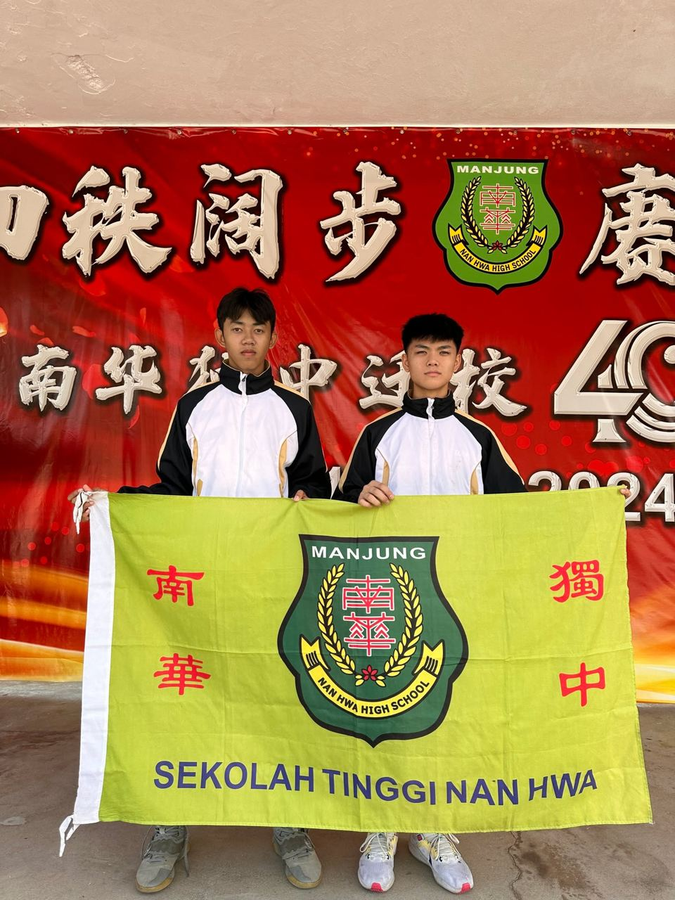
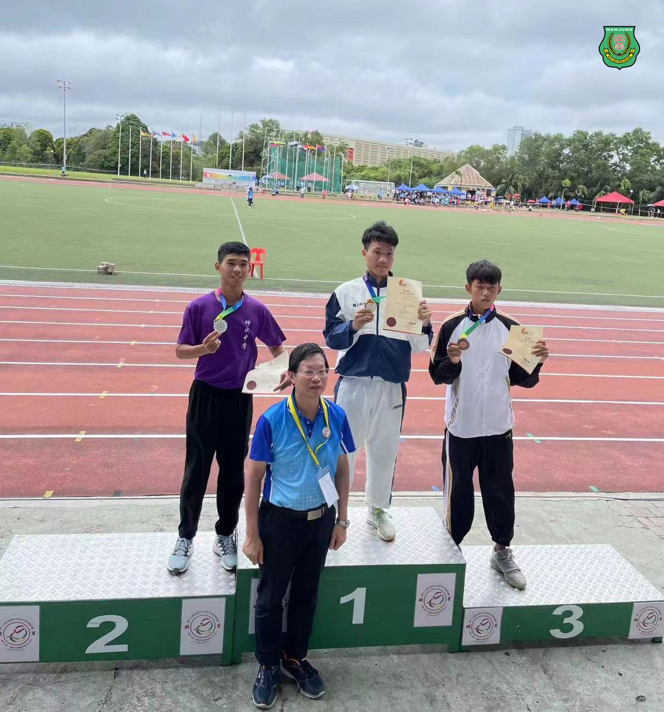
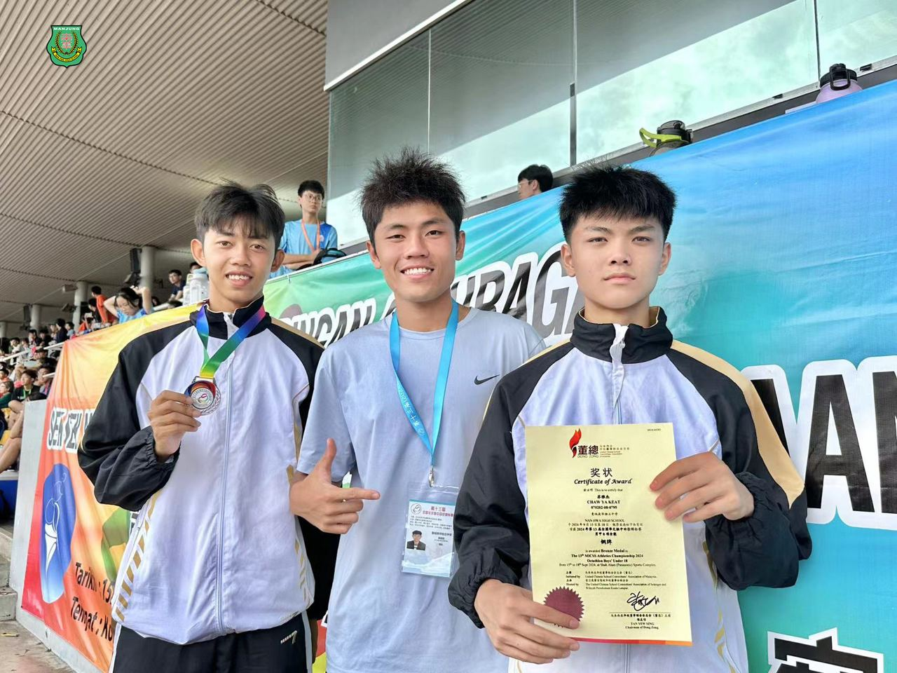

全国华文独中田径锦标赛
全国华文独中田径锦标赛
南华独中苏雅杰张梓乐表现亮眼
南华独中两位学生在近日举行的全国华文独中田径锦标赛中取得了令人瞩目的成绩。苏雅杰同学荣获铁人八项季军，而张梓乐同学则在400米赛事中摘得亚军。
校长陈丽冰博士为学生们佳绩表示赞赏，并表示学生在全国性赛事中夺得如此佳绩，足以证明苏雅杰与张梓乐天赋异禀，有能力在更高的舞台上一展身手。陈校长特别感谢体育教练颜国政老师的悉心栽培，"颜国政老师的专业指导为我们的学生打下了坚实的基础，使他们能在激烈的竞争中脱颖而出。"
对于学生们的出色表现，教练颜国政老师尤为欣慰，不枉学生经常牺牲私人时间勤加训练，“唯有付出了努力，才不会埋没自身非凡的天赋和潜力。我希望他们能继续保持这种运动精神，在体坛上更广阔的舞台上展现自己的实力。”
张梓乐同学于日前曾代表本校参加第十九届全霹雳华文独中田径锦标赛男子乙组荣获最佳运动员，成为唯一一位在比赛中连续破三项个人项目纪录的选手！连续夺得100米、200米和400米的冠军。此行获得400米亚军的张梓乐同学表示此次的成绩虽然并非最好，但仍旧鼓舞了自身，并深知自己还有进步的空间，希望能够在接下来的体育训练中继续努力，争取在未来的比赛中取得更好的成绩。铁人八项季军得主苏雅杰则对学校及教练表示感谢，为此次参加全国性的比赛提供充实的训练与栽培。


